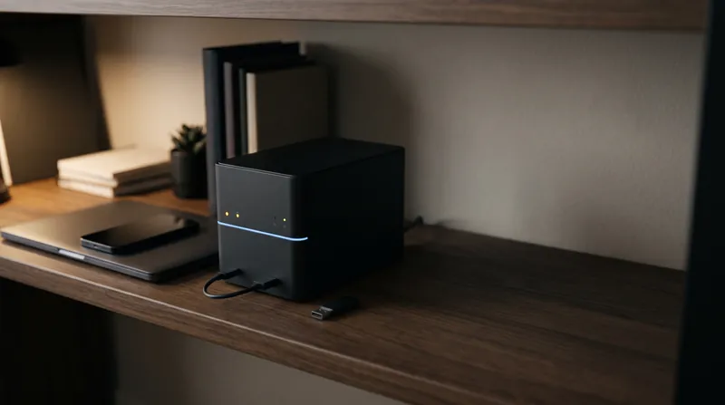

Illustration, KI-generiert
Lesebibliothek verschlüsselt mit Nextcloud, S3 oder lokalem Ordner synchronisieren
Ihre gespeicherten Artikel, Zusammenfassungen, Highlights und Notizen auf allen Rechnern – gespeichert am Ort Ihrer Wahl, lesbar nur mit Ihrem Schlüssel. In zehn Minuten eingerichtet, ganz ohne Benutzerkonto bei uns.
Die Kurzfassung. Öffnen Sie in AI Summary Helper Einstellungen → Synchronisierung & Backup → Speicherort hinzufügen, wählen Sie Nextcloud/WebDAV, S3-kompatiblen Speicher oder einen lokalen Ordner auf Ihrem Rechner und übernehmen Sie die vorgeschlagene Passphrase. Alles wird direkt in Ihrem Browser verschlüsselt, bevor es hochgeladen wird. Auf Ihrem zweiten Rechner fügen Sie denselben Speicherort hinzu und geben die Passphrase ein. Das ist die gesamte Einrichtung. Der Rest dieser Seite erklärt die einzelnen Speichertypen, was synchronisiert wird und was bei Fehlern zu tun ist.

Warum dieser Ansatz? Weil eine Lesebibliothek wertvoll ist und Werkzeuge, auf die man sich verlässt, eingestellt werden können (mehr dazu hier). Durch die Synchronisierung auf eigenen Speicher überdauert Ihre Bibliothek jede einzelne Anwendung und jedes Benutzerkonto.
Was synchronisiert wird – und was nicht
- Synchronisiert: gespeicherte Artikel inklusive Volltext und Zusammenfassungen, Tags, Highlights, Ihre Notizen und Kommentare sowie Sammlungen.
- Nicht synchronisiert: Ihre API-Schlüssel, Zugangsdaten, der Sync-Login selbst und gerätespezifische Einstellungen. Backups und die Synchronisierung lassen diese Daten bewusst aus.
- Ein Artikel pro Seite: Wenn Sie dieselbe Seite auf zwei Rechnern gespeichert haben, erhalten Sie einen zusammengeführten Artikel (Tags und fehlende Felder werden kombiniert).
- Bearbeitungen werden feldweise zusammengeführt: Wird auf einem Rechner der Titel geändert und auf einem anderen ein Tag ergänzt, bleiben beide Änderungen erhalten. Wurde dasselbe Feld geändert, gewinnt die spätere Änderung – einheitlich auf jedem Gerät.
Schritt 1: Speicherort auswählen
Nextcloud oder ein anderer WebDAV-Server
Ideal, wenn Sie bereits Nextcloud betreiben oder eine gehostete Instanz nutzen (wird von vielen europäischen Anbietern bereitgestellt). Sie benötigen drei Angaben:
- Die Adresse Ihrer Dateien. Bei Nextcloud sieht das so aus:
https://your-server/remote.php/dav/files/your-username/. Öffnen Sie in Nextcloud Dateien → Einstellungen und kopieren Sie die dort angezeigte WebDAV-Adresse. - Ihr Benutzername.
- Ein App-Passwort, nicht Ihr Hauptpasswort. In Nextcloud: Einstellungen → Sicherheit → Geräte & Sitzungen → Neues App-Passwort erstellen. Wenn Sie den Zugriff später widerrufen möchten, löschen Sie einfach diesen einen Eintrag.
Wählen Sie einen Ordnernamen wie aish-sync. Er wird automatisch für Sie angelegt. Andere WebDAV-Server (viele NAS-Systeme, ownCloud) funktionieren genauso; lediglich das Adressformat weicht ab.
Ein S3-kompatibler Bucket
Ideal, wenn Sie Objektspeicher bevorzugen: AWS S3, Cloudflare R2, Backblaze B2, MinIO und ähnliche. Erstellen Sie einen Bucket und anschließend einen Zugriffsschlüssel ausschließlich für diesen Bucket mit Berechtigungen zum Lesen, Schreiben, Auflisten und Löschen. Verwenden Sie niemals den Hauptschlüssel Ihres Kontos. In der Erweiterung geben Sie die Endpoint-Adresse (z. B. https://s3.eu-central-1.amazonaws.comoder die von Ihrem Anbieter angegebene Adresse), den Bucket-Namen, die Region (Standardwert beibehalten, falls nicht abgefragt), die Access Key ID und den Secret Key ein.
Ein Ordner auf Ihrem Rechner
Ideal, wenn bereits ein anderes Tool Ordner zwischen Ihren Geräten abgleicht: Syncthing, Ihr Desktop-Sync-Client, iCloud Drive oder ein USB-Laufwerk. Wählen Sie Ein lokaler Ordner auf diesem Computer und bestimmen Sie einen neuen, leeren Ordner, zum Beispiel Dokumente/AISH-sync. Chrome erlaubt nicht, Desktop, Dokumente oder Downloads direkt als Hauptordner auszuwählen – nutzen Sie daher einen Unterordner. Dies funktioniert in Chrome und Edge auf dem Desktop. Zwei Hinweise: Der Browser fragt nach einem Neustart möglicherweise erneut nach der Zugriffsberechtigung (in den Einstellungen gibt es dafür eine Schaltfläche), und der Ordner wird nur synchronisiert, solange der Browser geöffnet ist.
Schritt 2: Verschlüsselung wählen und Passphrase sichern
Beim Hinzufügen des Speicherorts ist Verschlüsselt standardmäßig ausgewählt und als Zweck ist Meine Geräte synchronisieren eingestellt. Die Erweiterung schlägt Ihnen sechs zufällige Wörter als Passphrase vor. Sie können auf Anderer Vorschlag klicken, bis Ihnen die Kombination zusagt, oder eine eigene wählen (mindestens 12 Zeichen, mit Hinweis bei geringer Stärke).
Nach dem Verbinden werden die sechs Wörter einmalig angezeigt. Speichern Sie diese in einem Passwortmanager; die Schaltfläche „Kopieren“ legt sie mit Bindestrichen verbunden in die Zwischenablage – so bleiben sie in Konfigurationsdateien und Chat-Apps intakt. Mit diesen Wörtern können Sie den Speicherort auf jedem Gerät öffnen; ohne sie kann niemand die Dateien lesen, auch wir nicht. Auf dem Rechner, auf dem Sie alles eingerichtet haben, können Sie die Wörter in den Einstellungen des Speicherorts unter Passphrase anzeigenerneut einsehen. Haben Sie stattdessen eine eigene Passphrase gewählt, wird diese nirgends hinterlegt und kann von der Erweiterung nicht erneut angezeigt werden.
Was der Speicheranbieter sieht: unlesbare Dateien mit verschlüsselten Dateinamen, deren Anzahl, Dateigrößen und Änderungszeitpunkte. Weder Titel noch Links oder Texte sind einsehbar. Ihre Bibliothek wird direkt in Ihrem Browser mit AES-256-GCM verschlüsselt, bevor sie das Gerät verlässt.
Schritt 3: Zweiten Rechner hinzufügen
- Installieren Sie die Erweiterung und öffnen Sie Einstellungen → Synchronisierung & Backup → Speicherort hinzufügen.
- Geben Sie dieselben Serverdaten ein (oder wählen Sie denselben Ordner aus).
- Die Erweiterung erkennt, dass der Ordner bereits eine verschlüsselte Bibliothek enthält, und fragt nach der Passphrase. Groß-/Kleinschreibung sowie Leerzeichen oder Bindestriche spielen bei der Eingabe keine Rolle.
- Sie werden gebeten zu bestätigen, dass Sie zuvor ein Backup dieses Geräts erstellt haben. Beim Beitreten wird die lokale Bibliothek mit der im Ordner zusammengeführt; bei Abweichungen hat der Ordner Vorrang. Nutzen Sie Jetzt Backup erstellen.
- Klicken Sie auf Verbinden. Die erste Synchronisierung kann bei großen Bibliotheken etwas Zeit in Anspruch nehmen; der Fortschritt wird auf dem Bildschirm angezeigt.
Nur Backup, Wiederherstellung und Veröffentlichung
- Nur Backup. Wählen Sie Nur Backup anstelle von Meine Geräte synchronisieren , damit der Rechner ausschließlich auf den Speicherort schreibt und niemals davon liest. Bei Bedarf können Sie die Daten über die Einstellungen des Speicherorts wiederherstellen: Alles wird zurückgeholt, und bei Abweichungen hat der Speicherort Vorrang. Es wird nichts gelöscht.
- Auf eigener Website veröffentlichen. Ein separater Speichertyp, Lesbar, exportiert Klartextdateien für Ihre eigene Website – ausschließlich für Artikel, die Sie entsprechend taggen, optional mit einer Viewer-Seite. Notizen und Volltexte bleiben standardmäßig ausgeschlossen, es sei denn, Sie aktivieren diese explizit, da jeder mit Zugriff auf diesen Ordner die Inhalte mitlesen kann. Nutzen Sie keinen lesbaren Speicherort für private Daten.
Fehlerbehebung
„Zugriff auf den Ordner erneut erlauben“
Der Browser entzieht nach einem Neustart den Ordnerzugriff. Klicken Sie auf die Schaltfläche oben unter Synchronisierung & Backup. Schlägt der Zugriff wiederholt fehl, handelt es sich eventuell um einen von Chrome geschützten Ordner (Desktop, Dokumente, Downloads oder Ihr Benutzerverzeichnis): Wählen Sie stattdessen einen eigens erstellten Unterordner.
„Der Server hat Benutzername und Passwort nicht akzeptiert“
Verwenden Sie bei Nextcloud ein App-Passwort. Prüfen Sie, ob die Adresse mit Ihrem Benutzernamen-Ordner endet und ob eine Zwei-Faktor-Authentifizierung das App-Passwort blockiert.
„Falsche Passphrase“
Prüfen Sie die Wörter: Groß-/Kleinschreibung, Leerzeichen und Bindestriche sind unerheblich, aber jedes einzelne Wort muss stimmen. Öffnen Sie auf einem bereits eingerichteten Rechner die Einstellungen des Speicherorts und klicken Sie auf Passphrase anzeigen. Wenn die Passphrase auf allen Geräten verloren gegangen ist, können die Dateien von niemandem mehr entschlüsselt werden: Entfernen Sie den Speicherort hier, legen Sie einen neuen an und starten Sie mit der lokalen Bibliothek auf Ihrem Rechner von vorn.
Viele Löschvorgänge stehen aus
Wenn auf einem anderen Gerät viele Artikel auf einmal gelöscht werden, wendet die Erweiterung zunächst nur wenige an und fragt vor dem Rest nach. So kann ein einzelnes Versehen nicht Ihre gesamte Bibliothek leeren. Prüfen Sie den Vorgang und bestätigen Sie die Löschung per Klick.
Ein Rechner war monatelang offline
Nach etwa drei Monaten sendet ein Rechner nur noch die seitdem geänderten Daten und löscht von sich aus nichts, damit andernorts gelöschte Artikel nicht versehentlich wiederhergestellt werden.
Fragen & Antworten
Benötige ich ein Benutzerkonto bei Ihnen?
Nein. Die Synchronisierung kommuniziert direkt aus Ihrem Browser mit dem von Ihnen hinterlegten Speicher. Wir betreiben keinen Sync-Server.
Funktioniert das auch auf dem Smartphone?
Unter Android: ja. Die Begleit-App (eine APK aus den GitHub-Releases; aktuell noch nicht im Google Play Store) kann Ihrer Bibliothek unter Einstellungen → Bibliotheks-Syncbeitreten. Am schnellsten geht es per Code: Öffnen Sie im Browser die Einstellungen Ihres Speicherorts, klicken Sie auf Code für das Smartphone anzeigen und scannen Sie den Code. Er enthält Ihre Server-Zugangsdaten – scannen Sie ihn daher nur mit Ihrem eigenen Smartphone. Das Smartphone zeigt Ihre gespeicherten Artikel inklusive Zusammenfassungen und Highlights an; Notizen werden in beide Richtungen synchronisiert. Seiten, die Sie auf dem Smartphone zusammenfassen, sowie dort markierte Textstellen fließen ebenfalls in Ihre Bibliothek ein – allerdings nur Seiten, die noch nicht vorhanden sind: Der Text im Desktop-Browser wird niemals überschrieben. Eine iPhone-App gibt es derzeit noch nicht.
Kann ich mehrere Speicherorte nutzen?
Ja. Eine bewährte Konfiguration ist ein verschlüsselter Speicherort für die Synchronisierung zwischen Rechnern und ein reiner Backup-Speicherort bei einem anderen Anbieter.
Ist es sicher, die Bibliothek in der Cloud zu speichern?
Sicherer als die meisten Standardlösungen, da der Anbieter ausschließlich verschlüsselte Dateien speichert. Der Schutz steht und fällt dennoch mit der Stärke Ihrer Passphrase und der Sicherheit Ihres Endgeräts. Lesen Sie dazu die offenen Einschränkungen, einschließlich des Hinweises, dass die Verschlüsselung bisher keinem unabhängigen Audit unterzogen wurde.
AI Summary Helper ist eine kostenlose Open-Source-Browsererweiterung. Die Synchronisierung ist standardmäßig deaktiviert, bis Sie einen Speicherort hinzufügen.
Zu Chrome hinzufügen